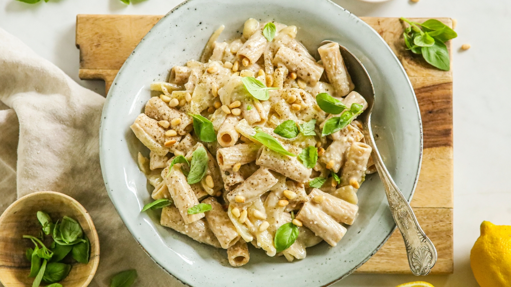

Venkel pasta

Ingredienten
- 1 venkelknol
- 1 witte ui
- 2 el milde olijfolie
- 300 gr pasta naar keuze
- Zout en peper ( naar smaak )
- 1 citroen ( sap + rasp )
- 100 ml plantaardige room (Alpro)
- 2 el vegan Parmezaanse kaas
- 1 handje verse basilicum
- geroosterde pijnboompitjes
Bereiding
- Was de venkelknol goed en snijd het groene gedeelte eraf. Snijd daarna de onderkant eraf, vervolgens de knol doormidden en daarna met een klein mes een driehoek aan de onderkant zodat je de harde kern kunt verwijderen. Snijd de venkel vervolgens in dunne plakjes.
- Maak de ui schoon en snijd in ringen. Zet een koekenpan op het vuur en verhit de olijfolie. Voeg de gesneden venkel en ui toe en roer het goed door. Bak de venkel en ui zachtjes, tot ze zacht en een goudbruine kleur krijgen. Dit duurt meestal zo’n 10 minuten.
- Kook ondertussen de pasta volgens de bereidingswijze op de verpakking en houd een kopje pastawater apart.
- Voeg het pastawater toe aan de gebakken venkel en ui en doe ook meteen het sap en de rasp van de citroen erbij. Roer goed door en breng op smaak met peper en zout.
- Giet als laatste de plantaardige room erin en voeg de (vegan) Parmezaanse kaas toe. Roer het goed door elkaar.
- Schep als laatste de gekookte pasta erbij en roer het goed door de saus. Vind je de saus toch nog iets te dik? Voeg dan nog een beetje extra pastawater toe. Proef en voeg meer zout, peper en/of citroensap toe naar smaak.
- Serveer de pasta meteen en garneer met wat fijngehakte verse basilicum en geroosterde pijnboompitjes.